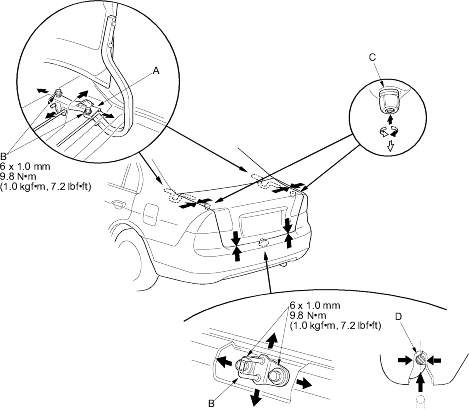

Trunk Lid
Adjustment
|
20-109 |
|
- Remove these items:
- Rear shelf, folding type rear seat (see page 20-65), fixed type rear seat (see page 20-66)
- Trunk rear trim panel (see page 20-67)
- Slightly loosen each bolt.
- Adjust the trunk lid alignment in the following sequence.
- Adjust the trunk lid hinges (A) right and left, as well as forward and rearward, by using the elongated holes. Take care not to hit the rear window when loosening the bolts (B).
- Turn the trunk lid edge cushions (C), in or out as necessary, to make the trunk lid fit flush with the body at the rear and side edges.
- Adjust the fit between the trunk lid and the trunk lid opening by moving the striker (D).

- Tighten each bolt securely.
- Make sure the trunk lid opens properly and locks securely.
- Reinstall all remaining removed parts.